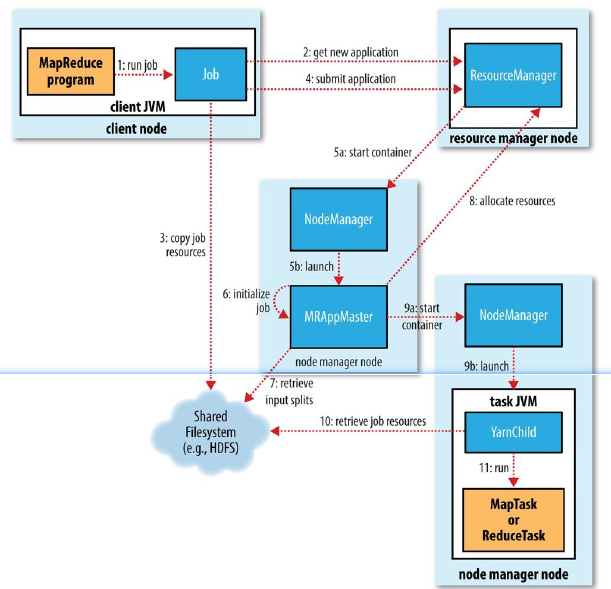
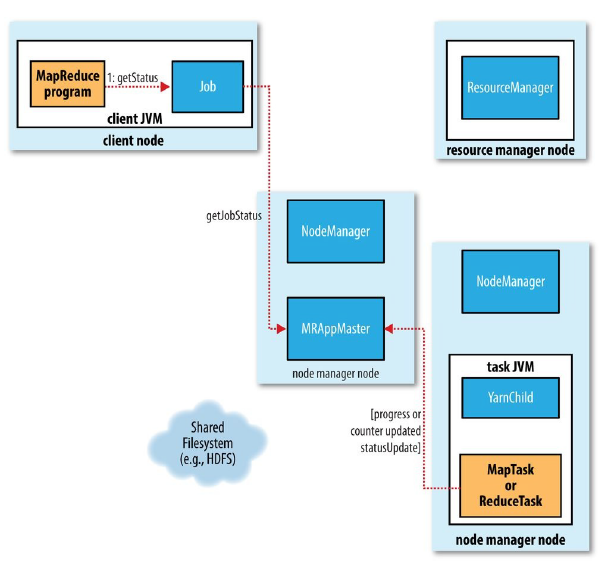

MapReduce作业简介
MapReduce作业通过Job对象的submit()方法来调用。整个过程大概可以描述为：
- 客户端，提交MapReduce作业；
- YARN资源管理器，负责协调集群上计算机资源的分配；
- YARN节点管理器，负责启动和监视集群中机器的计算容器（container）；
- MapReduce的ApplicationMaster，负责协调运行MapReduce作业的任务。它和MapReduce任务在容器中运行，这些容器由资源管理分配并由节点管理器进行管理；
- 分布式文件系统，用来与其他实体间共享作业文件。

MapReduce运行流程
作业的提交
Job的submit()方法创建了一个JobSubmitter实例，该实例调用submitJobInternal()方法，该方法用于将任务提交到集群。查看源码注释得知作业提交过程如下：
- 向资源管理器请求一个应用ID，用于MapReduce作业的ID（步骤2）；
- 检查作业的输入输出路径；
- 计算作业的输入分片；
- 设置运行作业所需要的信息；
- 复制作业的jar包、配置文件和j算所得的输入分片复制到以ID命名的分布式文件系统中（步骤3）;
- 通过调用YARN中的
submitApplication()方法提交作业。并监视器状态（步骤4）。
作业的初始化
YARN收到submitApplication()调用消息后，便将请求传递给调度器（scheduler）。调度器分配一个容器，然后资源管理器在节点管理器的管理下载容器中启动ApplicationMaster进程（步骤5a和5b）。
ApplicationMaster是一个java应用程序，其主类是MRAppMaster。由于将接受任务的进度和完成报告（步骤6），因此ApplicationMaster对作业的初始化时通过创建多个簿记对象以保持对做作业进度的跟踪来完成的。接下来，它接受来自共享文件系统的、在客户端计算的输入分片（步骤7）。然后对每个分片创建一个map任务对象以及由mapreduce.job.reduces属性（通过setNumReduceTasks()方法设置）确定多个renduce任务对象。任务ID在此时分配。
ApplicationMaster必须决定如何运行构成MapReduce作业的各个任务。如果作业很小，就选择和自己在同一个JVM上运行任务。当ApplicationMaster判断在新的容器中分配和运行任务的开销大于并行运行它们的开销时就会发生这一情况。这称之为uber任务运行。
最后，ApplicationMaster设置OutputCommitter。
任务的分配
如果作业不适合作为uber任务运行，那么ApplicationMaster就会未改作业中的所有map任务和reduce任务向资源管理器请求容器（步骤8）。首先为Map任务发出请求，知道有5%的map任务已经完成时，为reduce任务的请求才会发出（map的优先级高于reduce）。
reduce任务能够在集群中任意位置运行，但是map任务的请求有着数据本地化的局限。
请求也为任务指定了内存需求和CPU数。
任务的执行
一旦scheduler为任务分配了一个特定节点上的container，ApplicationMaster就通过与NodeManager通信来启动container（步骤9a和9b）。该任务由类YARNChild的一个java应用程序执行。在任务运行之前，首先将任务需要的资源本地化，包括作业的配置、jar文件和所有来自分布式缓存的文件（步骤10）。最后运行map任务和reduce任务（步骤11）。
每个任务动能够执行setup和commit动作，他们和任务本身在同一个JVM中运行，并由作业的OutputCommitter确定。对于基于文件的作业，提交动作将任务输出由临时位置搬移到最终位置。提交协议确保当推测执行被启用时，只有一个任务副本被提交，其他的都被取消。
任务的状态
一个作业和它的每个任务都有一个状态，包括：
- 作业或任务的状态（运行中、成功、失败）；
- map和reduce的进度；
- 作业计数器的值；
- 状态消息或描述。
任务在运行时，对其进度保持追踪。对map任务，任务进度是已处理输入所占的比例；对reduce任务，系统会估计已处理reduce输入的比例。

作业的完成
当ApplicationMaster收到作业最后一个任务完成的通知后，便把作业的状态设置为“成功”。于是job打印一条消息告知用户，然后从waitForCompletion()方法返回。job的统计信息和计数值也输出到控制台。